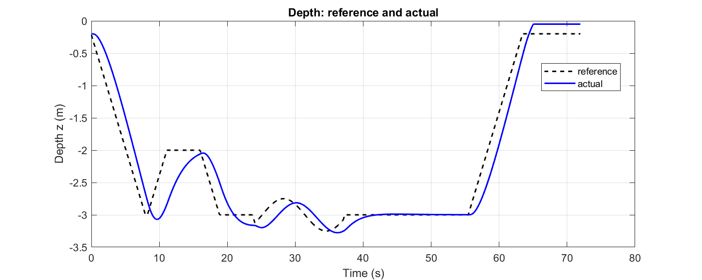
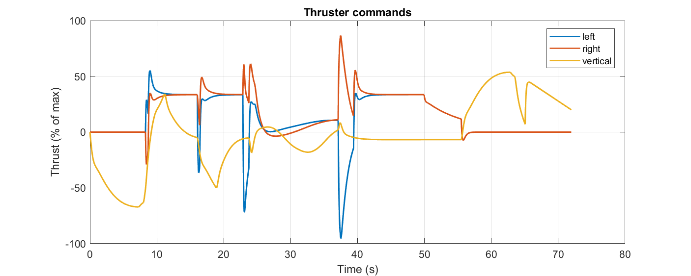
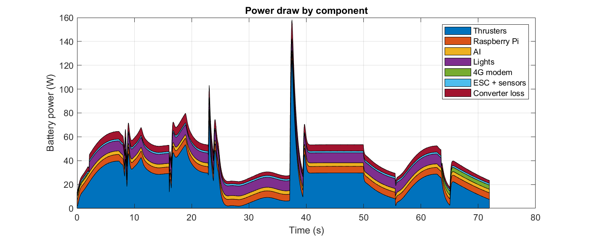
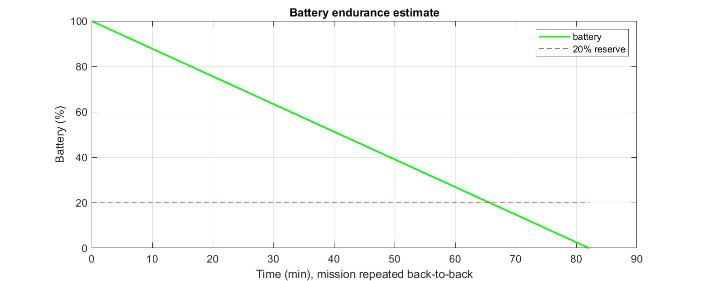
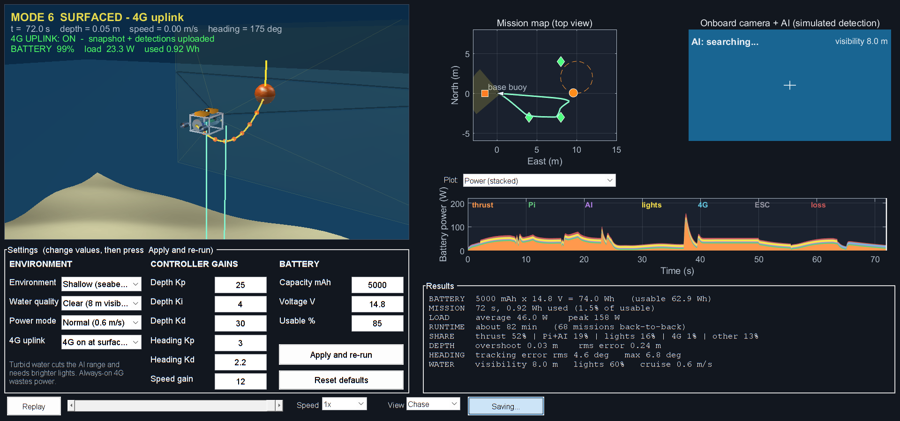

| Parameter | Value |
|---|---|
| Environment | Shallow (seabed 6 m, operating depth 3 m) |
| Water quality | Clear (8 m) |
| Power mode | Normal (0.6 m/s) |
| 4G uplink | 4G on at surface only |
| Depth controller (Kp / Ki / Kd) | 25 / 4 / 30 |
| Heading controller (Kp / Kd) | 3 / 2.2 |
| Speed gain | 12 |
| Battery | 5000 mAh at 14.8 V = 74.0 Wh nominal, 85% usable = 62.9 Wh |
| Quantity | Value |
|---|---|
| Mission duration | 72 s |
| Energy used in one mission | 0.92 Wh (1.5% of usable battery) |
| Average / peak electrical load | 46.0 W / 158 W |
| Estimated runtime (mission repeated) | about 82 min, 68 missions back-to-back |
| Runtime until 20% reserve | about 66 min |
| Energy share | thrusters 52%, Pi 12%, AI 7%, lights 16%, 4G 1%, ESC 3%, converter loss 10% |
| Depth overshoot / RMS error | 0.03 m / 0.24 m |
| Heading error while tracking | RMS 4.6 deg, max 6.8 deg |
| Camera visibility / AI range | 8.0 m |
| Lights level | 60% |
| Phase | Time (s) |
|---|---|
| Dive | 8.3 |
| Search (waypoints) | 15.4 |
| AI tracking | 13.4 |
| Return to base | 18.4 |
| Ascend | 8.5 |
| Surfaced / 4G uplink | 8.1 |




